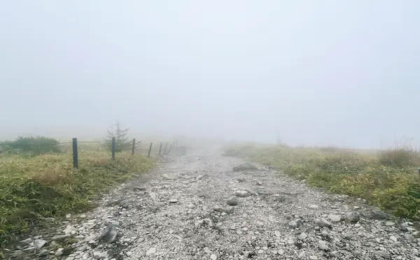

2025.10.17
無事本が発売され、バーンアウト気味なまま生活していたのですが、いつのまにか10月も後半に入っており、カレンダーを見てぞっとしました。
何か大きな制作が終わるとどうしても無気力になるので、この期間はインプットする時間と割り切って趣味を楽しみながら過ごしたいのですが、創作から離れていると焦りと無力感でかえって気力を失う気がします。ただのドーパミン中毒かもしれません。
先日、霧ヶ峰の車山高原へ行き、眺望の全くない濃霧の中、前髪をびしょびしょにしながら歩いてきました。カフェの店員さんに「どうしてこんな日に来たの〜」と言われるくらいには視界が悪かったのですが、霧は霧で大好きなお天気なので満足度の高いハイキングでした。

この彩度の低さは数年前に訪れた九十九里浜を思い出します。曇天と灰色の海がツボに刺さってしまい、時折思い出してはあの瞬間に戻りたくなるので、似たような雰囲気を山でも味わえたのはラッキーでした。
あとはずっと読みたかったホワイト・フラジリティを読んでいます。まだ5分の1程度ですが、内容が強烈すぎて最近はこの本に脳を支配されています。自分の置かれた環境とは異なるので置き換えつつ読み進めていますが、どんな社会にも当てはまる気がします。
普遍的なテーマが好きなので愛や平和に関する哲学を読む事が多いのですが、社会学を挟んで考えると解像度が上がる気がします。ホワイト・フラジリティにある近年のレイシズムの話は個人的に特にシリアスに感じる内容で、
社会構造的に消えるはずがないのがレイシズムなのに「私は加担していない」と認識して自身の非加害性を確信しようとする防衛反応は自分にも身に覚えがあり、
自己欺瞞の種だなあと思いながら、この「私は理解しているぞ」という姿勢がまた自分の無知を加速させるような気がしてなりません。もはや内省ワークブックです。バイブルにしたいです。
この本に書かれているような心の脆さを直視すると、じゃあ強さとは何かという疑問が浮かびますが、暴力性に対抗する術としての愛、もっと砕くと寛容性がそれに該当するのではないかなと思います。
これは優しさやおおらかさという性格的なものではなく、ましてやある立場が別の立場をゆるすという優位性ありきのものでもなく、単に自分と異なる何かに対して、それをそれとして見つめるという姿勢のようなイメージです。そんな風になりたいな〜。
今まで、創作をするときに深い思想を乗せることは避けてきたのですが、歳を重ねるにつれて、自分がこの世から離れるときに何を残したいのかを考えるようになりました。そうなると、やっぱり普遍的なテーマに対して自分なりの答えとなるような作品を作りたい、という気持ちになります。
来年のコミティアでそれに少し近い方向性の作品が出せたらと思っていますが、そのために読んでおきたい本が沢山あるのでしばらくは読書生活になりそうです。